Doorlopend
Boekhouding
Aankopen, verkopen en uittreksels netjes verwerkt. U ziet waar uw zaak staat zonder zelf te moeten rekenen.
Vraag het aan Dirk →Ik ben Dirk Debyser. Ik doe de boekhouding en de aangiftes voor zelfstandigen en zaken uit Lichtervelde en omstreken. U belt mij, niet een onthaal. En wie mij een vraag stuurt, krijgt een antwoord in gewone mensentaal.
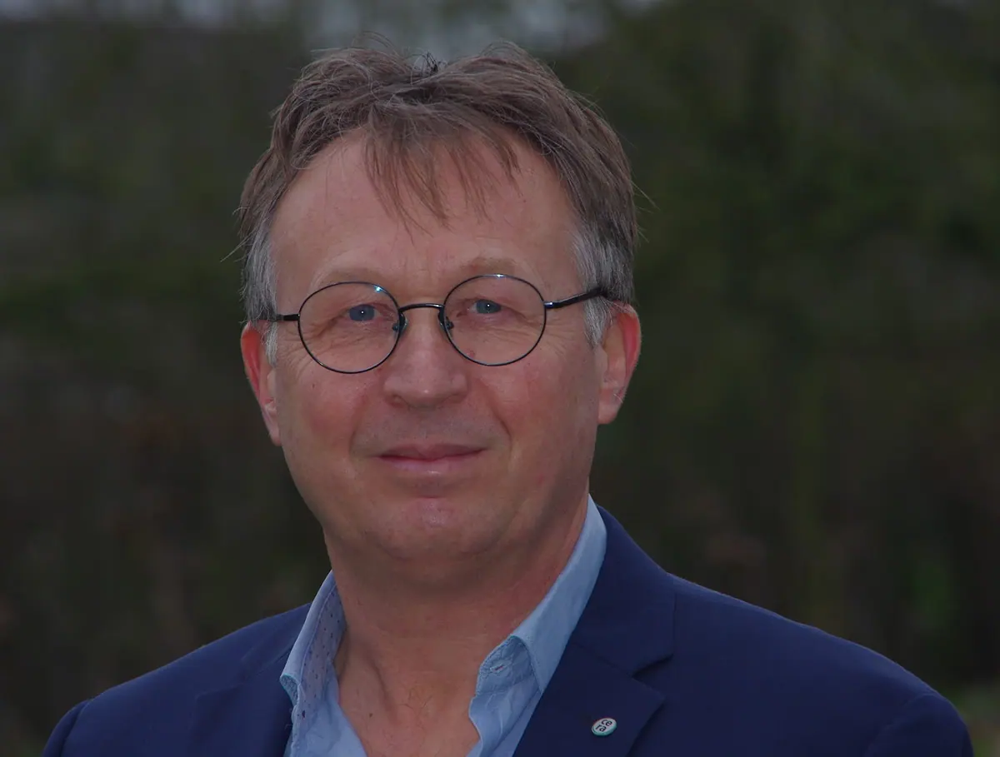
U brengt de papieren, ik zorg dat alles juist en op tijd binnen is. Kies wat bij u past, of vraag het gewoon.
Aankopen, verkopen en uittreksels netjes verwerkt. U ziet waar uw zaak staat zonder zelf te moeten rekenen.
Vraag het aan Dirk →Op tijd ingediend, met de klantenlisting erbij. Geen boete omdat een datum door de mand viel.
Vraag het aan Dirk →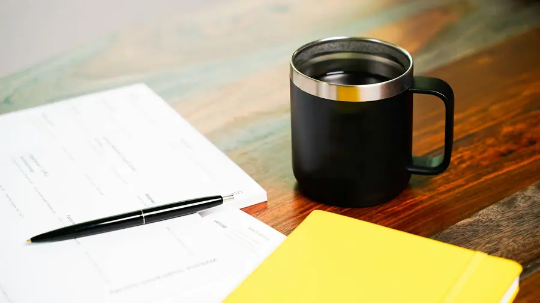
Elk jaarUw aangifte ingevuld en nagekeken, ook als er een bijberoep, een huis of een lening bij komt kijken.
Vraag het aan Dirk →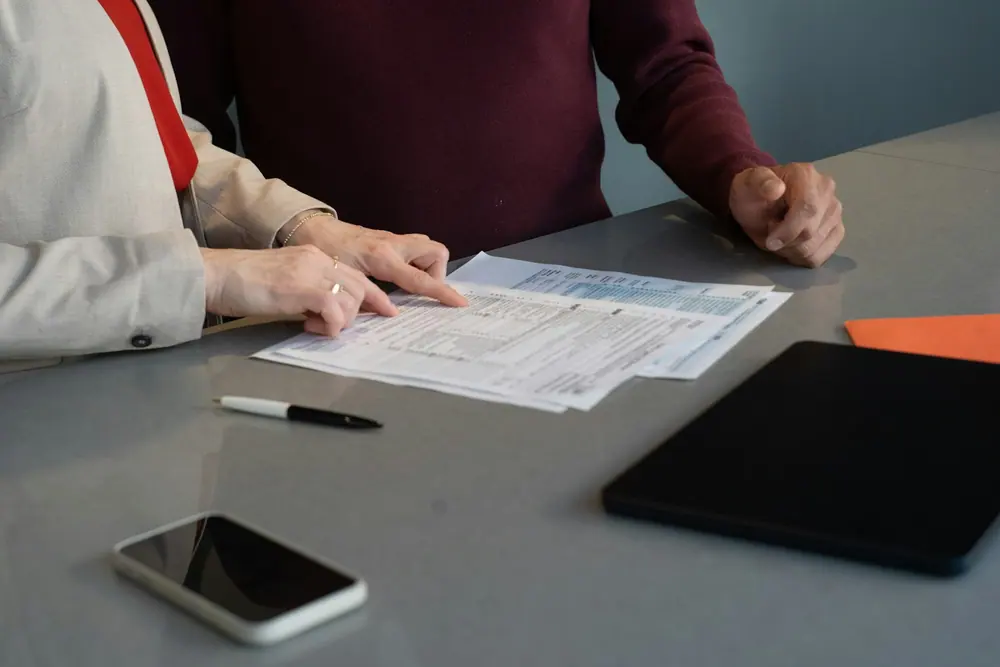
VennootschappenVoor wie met een BV werkt: de jaarafsluiting, de neerlegging en de aangifte, zonder last-minutewerk.
Vraag het aan Dirk →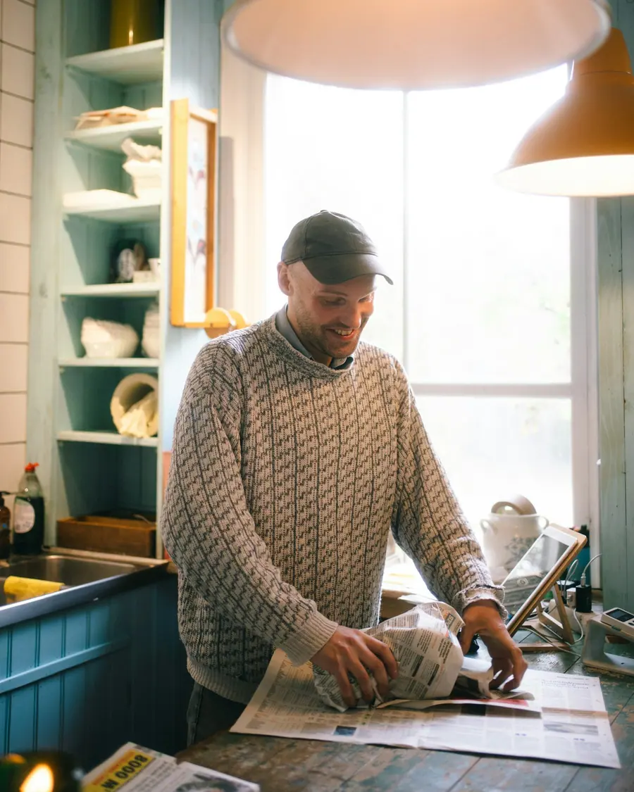
StartersEenmanszaak of vennootschap, hoofd- of bijberoep. We overlopen samen wat er geregeld moet worden voor u begint.
Vraag het aan Dirk →Een auto kopen via de zaak, een investering plannen, een brief van de fiscus. Even vragen kost niets.
Vraag het aan Dirk →Elk dossier loopt op dezelfde manier. Dan weet u wat u wanneer moet binnenbrengen.
Een gesprek aan de Bellestraat of bij u. U vertelt wat u doet, ik zeg eerlijk wat ik voor u kan doen.
Facturen en uittreksels via mail, een map of een app. Wat voor u het makkelijkst is.
Ik volg de data op. U krijgt een seintje als er iets van u nodig is.
Eén keer per jaar zetten we samen alles op een rij. Waar staat u, en wat komt eraan.
Kies waarover het gaat en zet er kort bij wat u wilt weten. Uw bericht staat meteen klaar in WhatsApp.
Wie voor zichzelf werkt, heeft geen tijd voor papierwerk. Daar ben ik voor.
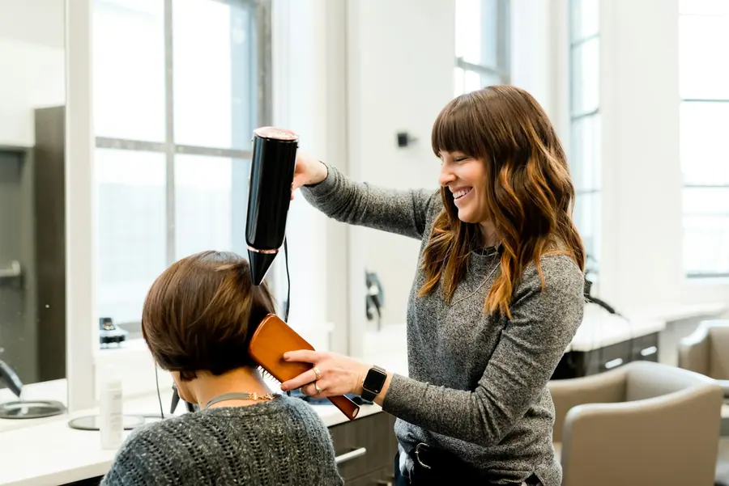
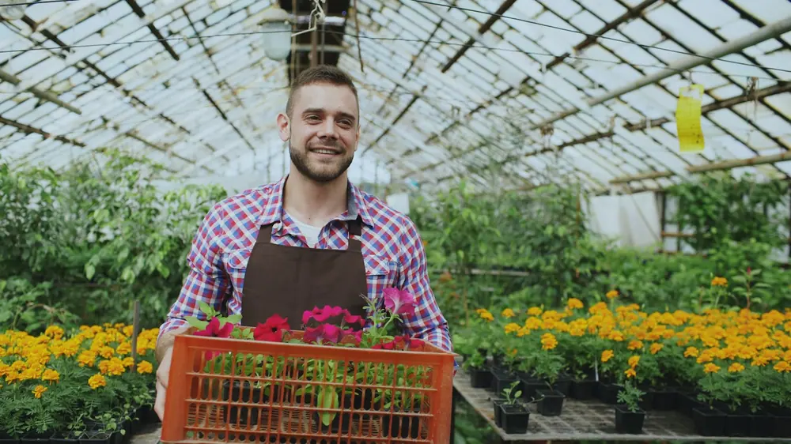
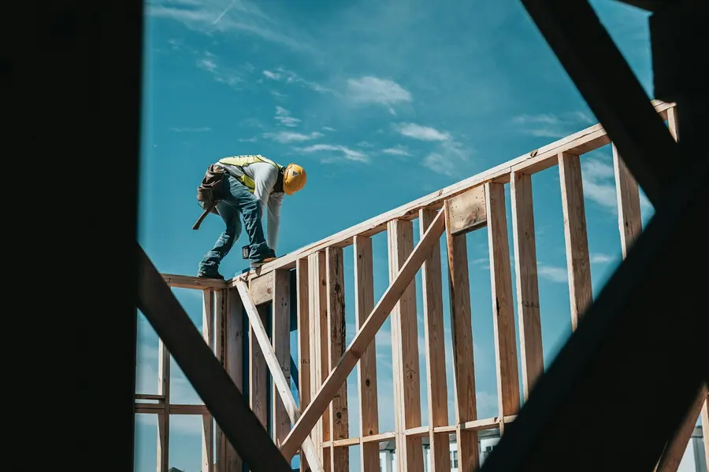
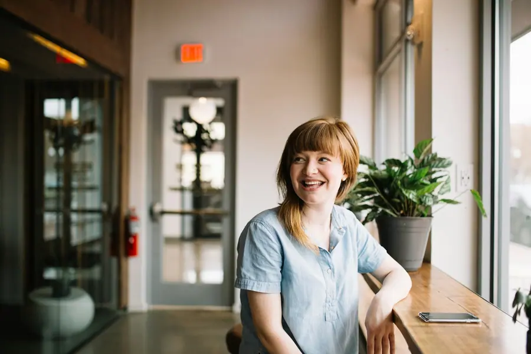

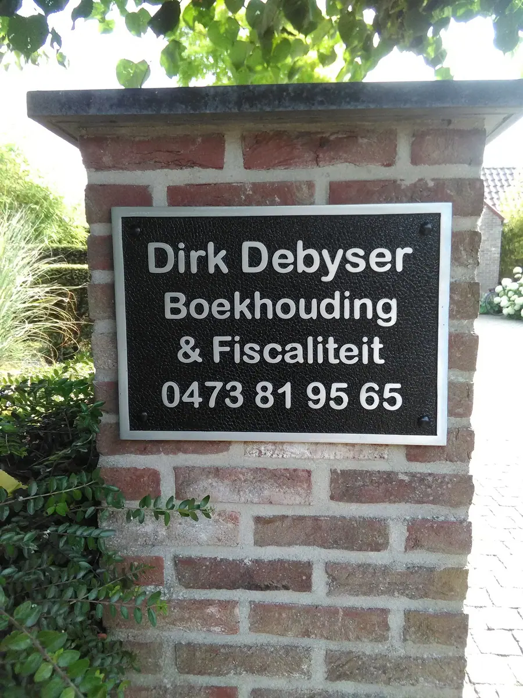
Geen groot kantoor met een onthaal en een wachtrij aan de telefoon. Wel een boekhouder die uw naam kent, en uw zaak.
Bij mij spreekt u altijd met dezelfde persoon. Wie zijn papieren komt afgeven, krijgt er een babbel bij. Wie een vraag heeft over een factuur of een brief van de belastingen, stuurt een berichtje en hoort snel iets terug.
Het kantoor is aan de Bellestraat in Lichtervelde. Een afspraak bij u thuis of op de zaak kan ook.
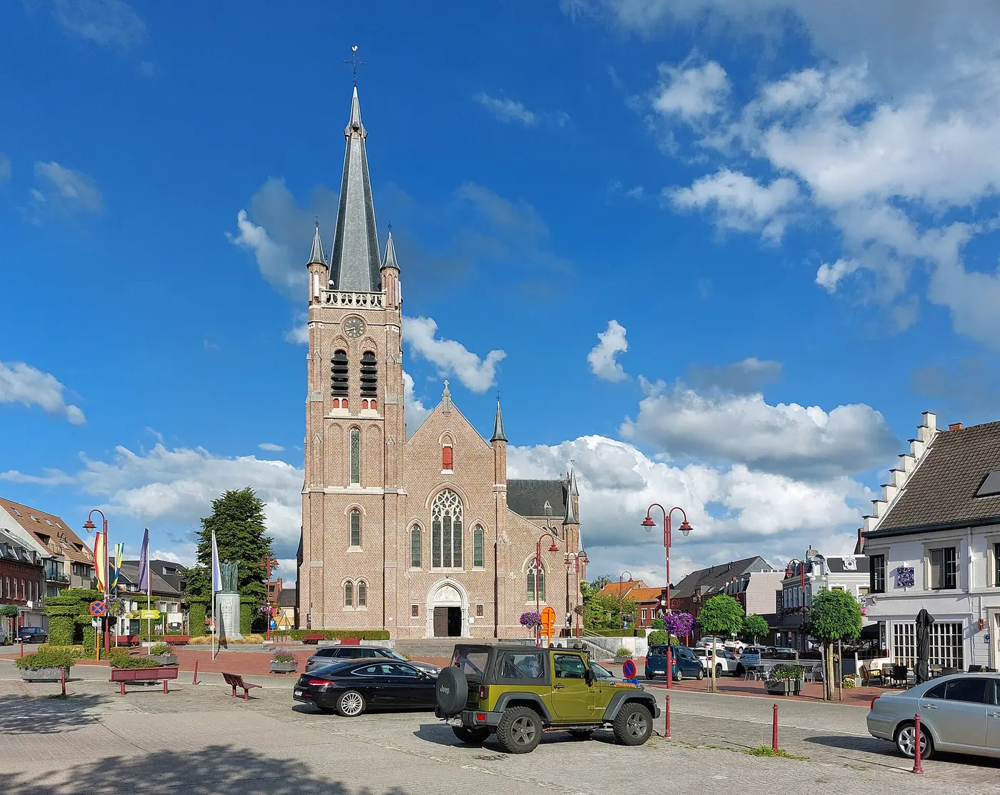
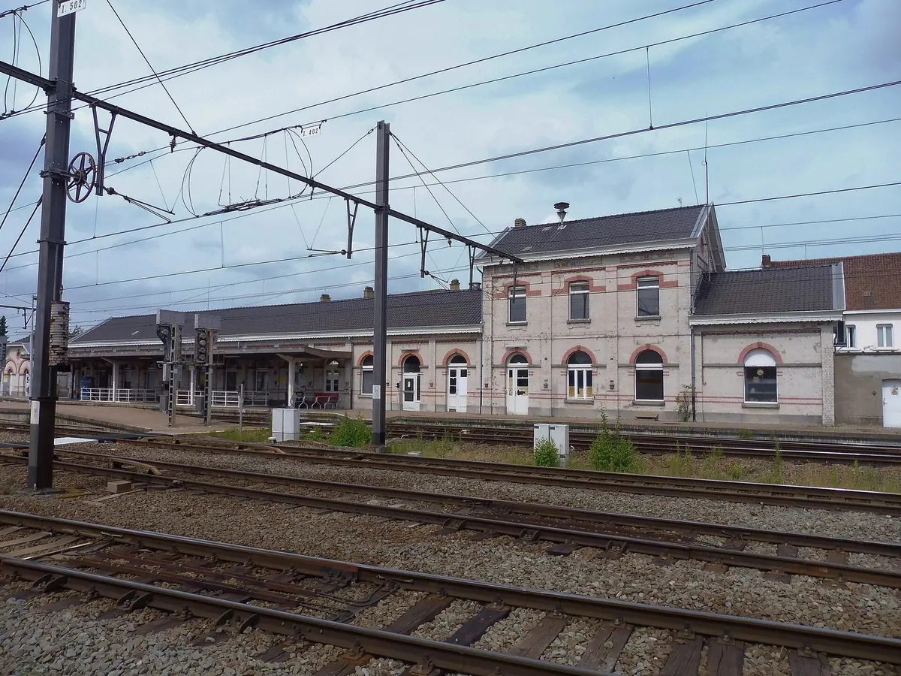
Hoeft niet. Veel klanten sturen hun facturen digitaal door. Wie liever langskomt met een map, is welkom aan de Bellestraat. Bel wel even op voorhand.
Verplicht is het niet, maar een goede start bespaart veel gedoe achteraf. We overlopen samen wat u moet regelen en wat u zelf kan doen.
Dat hangt af van uw inkomen, uw plannen en uw risico. Daar is geen standaardantwoord op. In een gesprek leg ik de voor- en nadelen voor uw situatie naast elkaar.
Ja. Ik neem contact op met uw vorige boekhouder voor de overdracht van het dossier. Daar hoeft u zelf weinig voor te doen.
Meestal dezelfde of de volgende werkdag. Bij een dringende brief van de fiscus mag u gerust bellen.
Dat hangt af van de grootte van uw dossier. Na een eerste gesprek krijgt u een duidelijke prijs, zodat u weet waar u aan toe bent.
Bel, stuur een berichtje of spring binnen op afspraak. Ik maak graag tijd voor u.
Ik maakte deze demo voor u om te tonen wat er kan. Na een kort gesprek maak ik er iets veel persoonlijkers van, helemaal naar uw wens.
Vrijblijvend. Ik kom langs of we bellen.
Op maat, op uw eigen domein.
Geen voorschot. U betaalt pas als alles klaar is.
Hosting, domeinnaam en kleine wijzigingen, zoals nieuwe openingsuren.
Omdat een voorbeeld meer zegt dan een mail. Zo ziet u meteen wat er kan, en het kost u niets.
Nee. Het gesprek is vrijblijvend. Vindt u het niks, dan is het daarmee gedaan.
Na ons gesprek staat uw site binnen 10 tot 14 dagen online.
Zeker. Uw domeinnaam kan gewoon blijven, de nieuwe site komt in de plaats van de oude.
Nee, dat doe ik op basis van ons gesprek. Eigen foto's zijn mooi meegenomen, maar niet nodig om te starten.